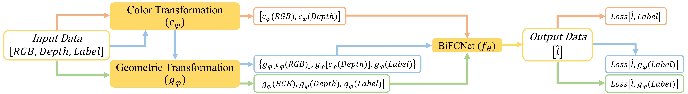
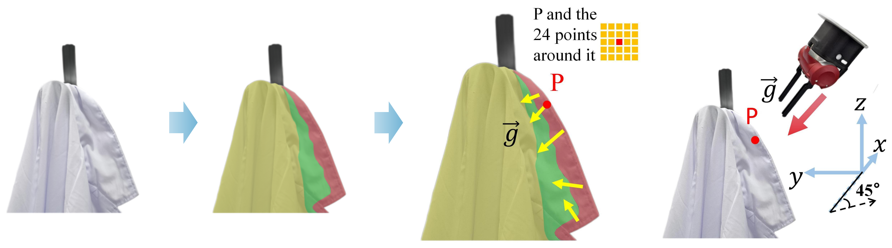

1 School of Artificial Intelligence, Jilin University, China.
2 Engineering Research Center of Knowledge-Driven Human-Machine Intelligence, Ministry of Education, China.
3 School of Computer Science, University of Birmingham, UK.
*Corresponding author. Email: gaoyixing@jlu.edu.cn
Clothes grasping and unfolding is a core step in robotic-assisted dressing. Most existing works leverage depth images of clothes to train a deep learning-based model to recognize suitable grasping points. These methods often utilize physics engines to synthesize depth images to reduce the cost of real labeled data collection. However, the natural domain gap between synthetic and real images often leads to poor performance of these methods on real data. Furthermore, these approaches often struggle in scenarios where grasping points are occluded by the clothing item itself. To address the above challenges, we propose a novel Bi-directional Fractal Cross Fusion Network (BiFCNet) for semantic segmentation, enabling recognition of graspable regions in order to provide more possibilities for grasping. Instead of using depth images only, we also utilize RGB images with rich color features as input to our network in which the Fractal Cross Fusion (FCF) module fuses RGB and depth data by considering global complex features based on fractal geometry. To reduce the cost of real data collection, we further propose a data augmentation method based on an adversarial strategy, in which the color and geometric transformations simultaneously process RGB and depth data while maintaining the label correspondence. Finally, we present a pipeline for clothes grasping and unfolding from the perspective of semantic segmentation, through the addition of a strategy for grasp point selection from segmentation regions based on clothing flatness measures, while taking into account the grasping direction. We evaluate our BiFCNet on the public dataset NYUDv2 and obtained comparable performance to current state-of-the-art models. We also deploy our model on a Baxter robot, running extensive grasping and unfolding experiments as part of our ablation studies, achieving an 84% success rate.
The overview of BiFCNet. We use a stage-by-stage Bi-directional propagation structure in the encoder. Two parallel ResNet-101 are used as the backbone and DeepLab V3+ is used as the decoder. The input of the network is a pair of RGB and depth images. Feature pairs output by each layer of ResNet-101 are fused by a FCF module and propagated to the next layer. Fusion results of the first and the last FCF modules are propagated to the DeepLab V3+.
The process of training BiFCNet using an adversarial strategy-based data augmentation method. We build color transformation and geometric transformation based on MLP networks. The data augmentation network (color transformation and geometric transformation in the figure) and BiFCNet are alternately trained in turns to update the parameters.
Strategy for selecting graspable points and grasp directions. We get the result of the segmentation. Then, a vector set is established for each point in the outer edge and the nearest point of the inner edge, and the surrounding 24 points are sampled to select the most suitable graspable point. We also set an angle of 45 degrees to the x-axis as the grabbing direction.
This work is supported in part by the National Natural Science Foundation of China under grant No. 62203184 and the International Cooperation Project under grant No. 20220402009GH. This work is also supported in part by the MSIT, Korea, under the ITRC program (IITP-2022-2020-0-01789) and the High-Potential Individuals Global Training Program (RS-2022-00155054) supervised by the IITP.